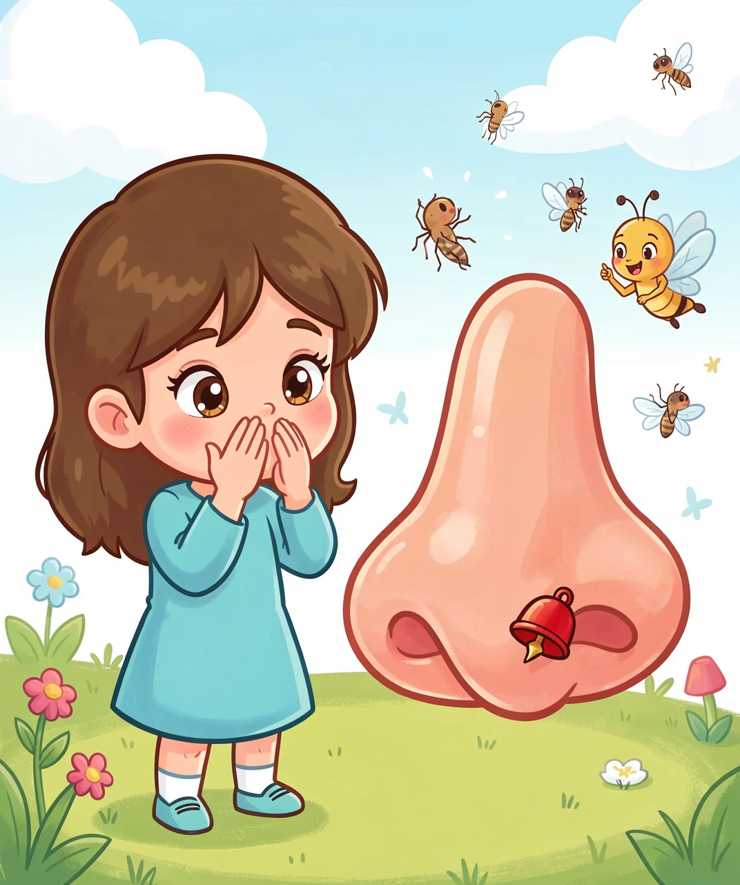
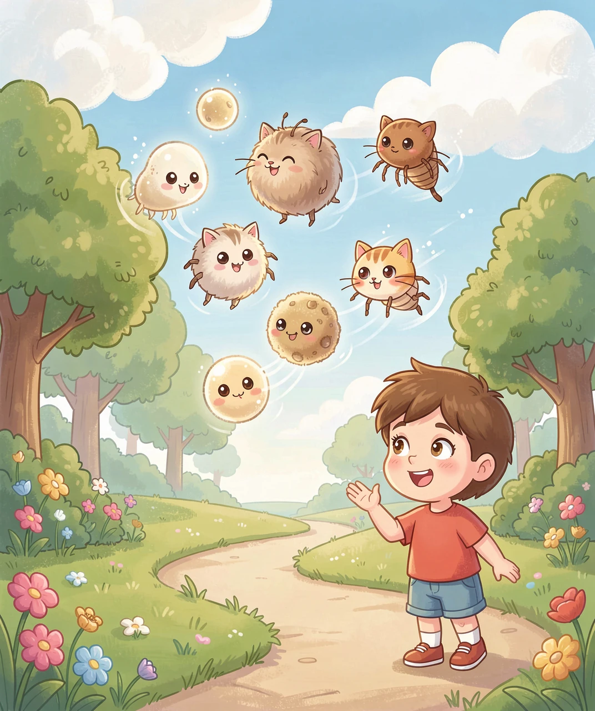
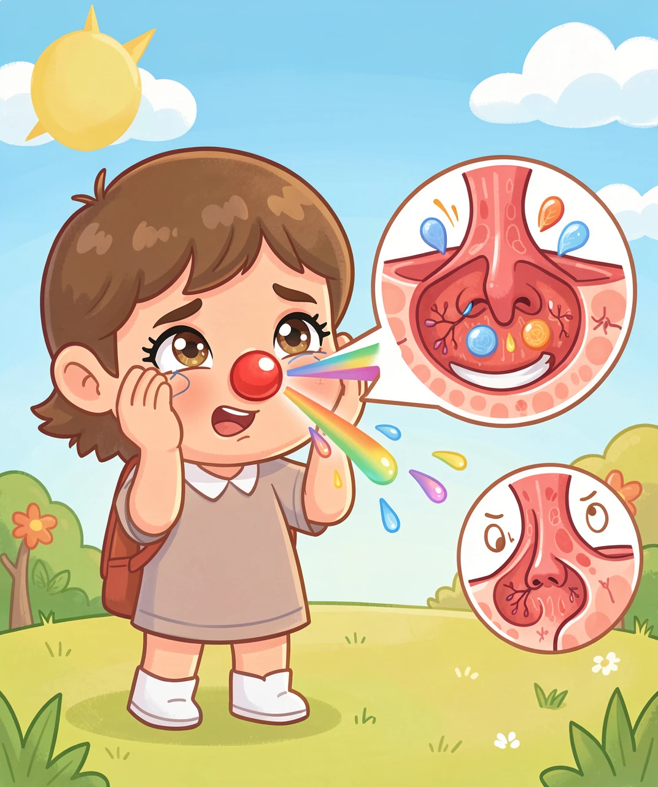
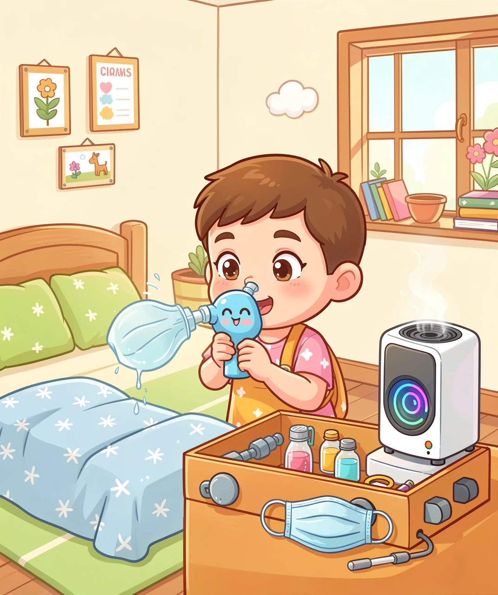

认识过敏性鼻炎，做鼻子的守护者！
🎵 "阿嚏！阿嚏！"——春天来了，花儿开了，可你的鼻子却像打开了水龙头，喷嚏一个接一个，鼻涕流个不停……你是不是也有过这样的经历？
别担心！这不怪你，也不怪你的鼻子——它只是把"朋友"错当成"敌人"了。今天，我们就来揭开过敏性鼻炎的秘密，学会和鼻子做朋友！
我们的鼻子里，住着很多看不见的小卫士——它们叫"免疫细胞"。正常情况下，这些免疫细胞就像小区里的保安叔叔，专门对付真正的坏蛋（比如病毒、细菌）。
但有些人的鼻子保安太"紧张"了！它们把本来无害的东西——比如花粉、灰尘——也当成了坏蛋，立刻拉响警报！
警报一响，鼻子就开始大作战：打喷嚏（想喷走"坏蛋"）、流鼻涕（想冲走它们）、鼻子堵（血管膨胀了想"关门"）。
「过敏」这个词，在医学里的意思是"对外来物质的过度反应"。就像你的手机音量被调到了最大，一个轻轻的触碰，它就"嗷"地尖叫起来——你的鼻子也是这样！

🔔 鼻子里的"警报器"——免疫细胞把花粉当成敌人了！
全世界大约有5亿人患有过敏性鼻炎！在中国，每10个小朋友里，就有2-3个受到它的困扰。所以，你不是一个人在"阿嚏"！
医生把引起过敏的东西叫做"过敏原"。那常见的"捣蛋鬼"都有谁呢？
🌿 花粉：春天的树木花粉、秋天的草花粉，是最常见的"罪魁祸首"。它们飘在空气里，肉眼看不见，但你的鼻子能"感觉"到它们！
🛏️ 尘螨：这是"最狡猾"的过敏原！尘螨是一种肉眼看不见的微生物，它们住在床单、枕头、毛绒玩具和地毯里，吃我们掉下来的皮屑为生。一只枕头里，可能住着成千上万只尘螨！
🐱 宠物皮屑：猫咪和小狗的毛本身不会让人过敏，真正捣乱的是它们的唾液、皮屑和小便里的一种特殊蛋白质。所以即使是无毛猫，也可能让人过敏哦！
一克床垫灰尘里，可能有超过1000只尘螨！它们最喜欢的环境是：温暖（20-25°C）、潮湿（湿度70-80%）。把枕头放太阳下暴晒，是它们最害怕的事！

🌸 花粉、尘螨、宠物皮屑……这些才是真正让你打喷嚏的"捣蛋鬼"！
其他常见的过敏原还有：霉菌孢子（浴室墙角那些黑点点）、蟑螂的粪便和尸体碎片、甚至某些食物也可能引起鼻子过敏。
如果你的鼻子在"呼救"，它会发出哪些信号呢？来看看你中了几条：
🤧 连环喷嚏：一次打三五个算少的，严重的时候连续十几个！这不是感冒——感冒喷嚏一般1-2个，而且伴有发烧、嗓子疼。
💧 清鼻涕像水龙头：和感冒的黄鼻涕不同，过敏性鼻炎的鼻涕是清澈的、水样的，流个不停。
👃 鼻子堵得像关了门：鼻粘膜（鼻子里面的"皮肤"）因为血管扩张而肿起来，让呼吸变得困难。晚上睡觉的时候最难受——有时候左边堵完右边堵，像玩"接力赛"！
👀 眼睛也遭殃：很多过敏性鼻炎的人，眼睛也会发痒、发红、流泪——这叫"过敏性结膜炎"。因为眼睛和鼻子通过"鼻泪管"连在一起，鼻子发炎，眼睛也跟着遭殃。
当过敏原进入鼻子，身体会释放一种叫"组胺"的化学物质。组胺像一把钥匙，打开了血管的"水龙头"，让液体渗出来、血管膨胀——结果就是鼻子堵了！所以医生给你开的抗过敏药，很多就是"抗组胺药"，把这种钥匙堵住。

🤧 打喷嚏、流鼻涕、鼻子堵——都是鼻子在说："帮帮我！"
⚠️ 一个小提醒：别把过敏性鼻炎当"感冒"来治！吃感冒药治不好过敏性鼻炎，还可能产生耐药性。如果"感冒"症状持续超过两周，就要怀疑是不是过敏性鼻炎了。
既然知道是谁在捣乱，我们就可以拿出"武器"来对付它们了！防过敏有四大法宝：
🛡️ 法宝一：躲开过敏原
这听起来简单，但最有效！花粉季节出门戴口罩、回家马上洗脸洗手、花粉高峰时段（上午10点到下午4点）关窗户、床单被套每周用热水（55°C以上）洗一次、把毛绒玩具收起来——这些小事做起来，效果比吃药还好！
💊 法宝二：药物帮忙
最常见的抗过敏药有两种：抗组胺药（比如氯雷他定、西替利嗪）——快速止喷嚏、止痒；鼻用激素喷雾（比如糠酸莫米松、氟替卡松）——坚持用才有效果，能减轻鼻塞和炎症。
💡 重点：鼻用激素不是"猛药"，它只作用在鼻子局部，全身吸收非常少，很适合小朋友在医生指导下使用！
🚿 法宝三：盐水洗鼻
用生理盐水冲洗鼻腔，就像给鼻子"洗澡"！可以把粘在鼻粘膜上的过敏原、灰尘、细菌冲走。专用的"洗鼻壶"或"鼻腔冲洗器"在药店就能买到，每天1-2次，效果显著而且没有副作用！
在家里可以自制洗鼻水：500毫升温水（烧开后晾温）+ 4.5克食盐（约半小勺），搅拌均匀。水温以不烫手背为宜。每次一侧鼻孔用约250毫升，轻轻冲洗即可！
🏥 法宝四：脱敏治疗（免疫治疗）
这是唯一能"治本"的方法！医生会让你反复接触极微量的过敏原（比如舌下滴几滴过敏原提取液），让你的身体慢慢"习惯"它，不再把它当敌人。疗程通常需要2-3年，但效果可以持续很多年，甚至可能"根治"！

🛡️ 躲开过敏原 + 合理用药 + 盐水洗鼻 + 脱敏治疗 = 鼻炎"克星"四大法宝！
了解了这么多知识，现在你可以成为自己鼻子的"守护者"啦！以下是一些日常生活中可以做的事：
🏠 打造一个"防过敏"的家：
• 卧室不用地毯，换成木地板或地砖
• 窗帘勤洗，或换成百叶窗
• 床垫和枕头套上防螨罩
• 保持室内通风干燥，湿度控制在50%以下
• 养宠物的话，不让它们进卧室
🌳 出门也有小技巧：
• 花粉季节戴口罩出门
• 戴眼镜或太阳镜（能挡住部分花粉飘入眼睛）
• 回家后换掉外套、洗脸洗手
• 花粉高峰期尽量少出门
💪 增强自身免疫力：
• 每天保证充足睡眠（小朋友要睡9-11小时）
• 均衡饮食，多吃水果蔬菜
• 坚持户外运动（选花粉少的时段）
• 保持好心情，压力大也会加重过敏
很多小朋友的过敏性鼻炎，随着长大会慢慢减轻甚至消失！因为随着年龄增长，免疫系统会越来越"成熟"，不再那么容易"大惊小怪"。所以，你不是在打一场永远打不完的仗——时间是站在你这边的！
🦸 学会正确的方法，每个小朋友都能成为鼻子的"小小守护者"！
题目一：过敏性鼻炎和普通感冒最大的区别是什么？
A. 过敏性鼻炎会发烧
B. 过敏性鼻炎的鼻涕是清水样的，不会发烧
C. 感冒不会打喷嚏
D. 过敏性鼻炎只发生在冬天
答案：B. 鼻涕清水样、不打喷嚏、不发烧——这些是区分鼻炎和感冒的标志
题目二：以下哪种东西最可能藏在枕头里引起过敏性鼻炎？
A. 花粉 B. 尘螨 C. 宠物狗 D. 蟑螂
答案：B. 尘螨——它们以人类皮屑为食，最喜欢住在温暖潮湿的床上！
题目三：为什么过敏性鼻炎会让你鼻子堵？
A. 鼻子里有小石头
B. 身体释放"组胺"，让鼻内血管膨胀
C. 鼻涕太稠堵住了
D. 鼻子自己"关上门"休息
答案：B. 组胺让鼻黏膜血管扩张、肿胀——这就是"抗组胺药"名字的来由！
题目四：盐水洗鼻的好处是什么？
A. 让鼻子变得很咸
B. 可以冲走过敏原和灰尘，而且没有副作用
C. 能代替吃药
D. 一次洗了就永远不犯鼻炎
答案：B. 洗鼻安全无副作用，能冲走过敏原，是防治鼻炎的好帮手
题目五：防治过敏性鼻炎，以下哪件事影响最大？
A. 每天反复揉鼻子
B. 在花粉季节出门戴口罩 + 每周用热水洗床单
C. 天天吹空调
D. 多喝热水
答案：B. 回避过敏原（戴口罩、洗床单）是最根本的防治手段
🏆 测试评分
答对5题：🌟🌟🌟🌟🌟 你是鼻炎知识小专家！
答对4题：🌟🌟🌟🌟 很棒，离专家只差一步！
答对3题：🌟🌟🌟 还不错，再复习一遍吧！
答对2题及以下：🌟🌟 没关系，多读两遍，你一定能记住！